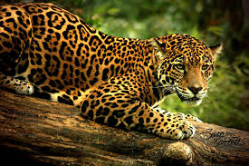
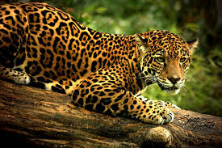

TORTUGAS BLANCAS

Pertenece a la familia dermatemydidae y su nombre taxonómico es dermatemys mawii. Esta tortuga es oriunda de México y América central, dando así su ubicación en la región de Tabasco, habitando en los ríos y estanques de agua dulce.
En lo que respecta a su reproducción su nidada ocurre durante la temporada de lluvias. Cuando los ríos se desbordan, estas tortugas aprovechan la oportunidad para desovar sin apenas salir del agua. En su estado natural se alimentan de plantas acuáticas además de hojas y frutas que caen al agua. Son nocturnas acudiendo en grupos a los lugares donde crece la vegetación acuática. Es posible que ingiera insectos entre las plantas, los cuales se consideran accidentales en su dieta. En cautiverio comen peces y es posible que carne. Lamentablemente este animalito se encuentra en peligro de extinción por diferentes motivos.
La carne de esta tortuga es comestible por lo que personas acuden a mercados para comprarlas y poder así consumirlas en guisos. Otro factor es la caza ya que también ocupan los caparazones para instrumentos musicales como tambor. Nosotros hemos influido en la destrucción de su hábitat, ya que arrojamos basura a los ríos y lagos perjudicando a las tortugas ya que las contaminamos. Otro factor muy indignante son los derrames de petróleo en aguas dulces. Para evitar la extinción de esta especie, el gobierno del estado ha implementado una unidad de manejo (UMA) la granja de tortugas “La Encantada” ubicada en el municipio de Nacajuca en específico para la tortuga blanca al igual que otros tipos de tortugas de la región logrando así reproducirlas y poder venderlas para que las personas no lleguen a la compra ilegal de este animal.